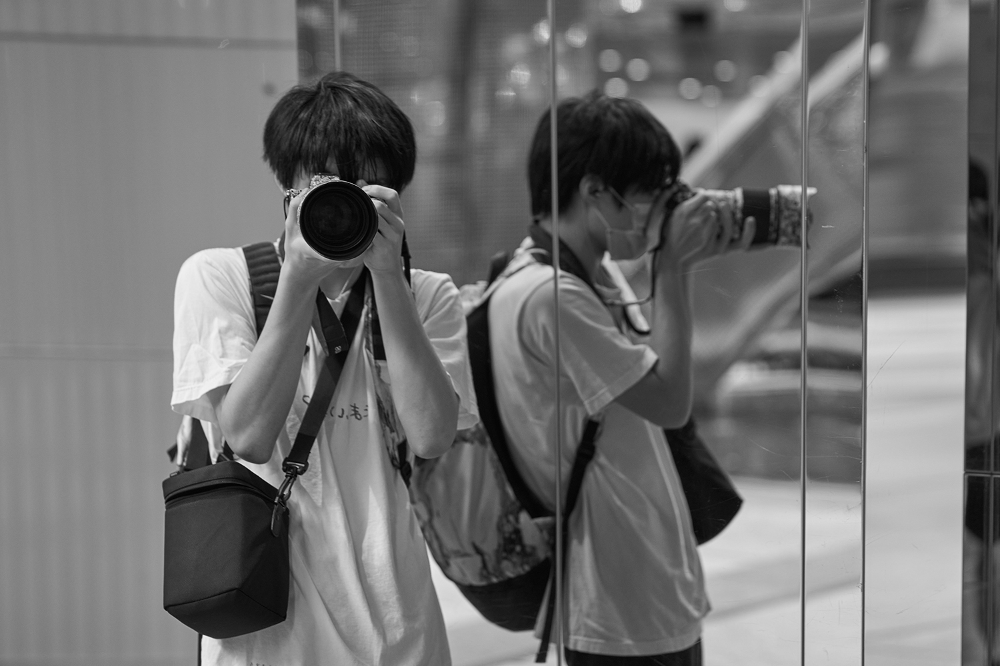
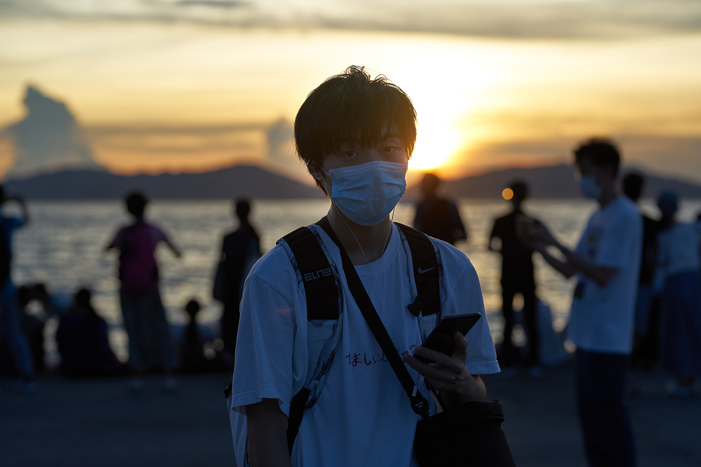
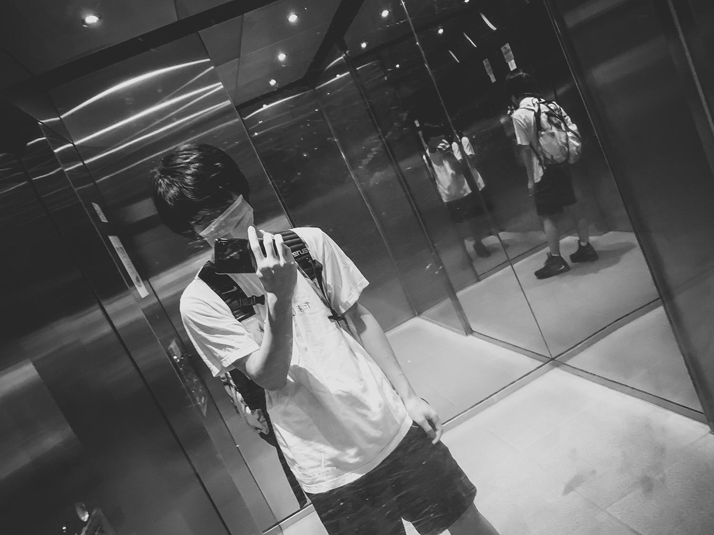
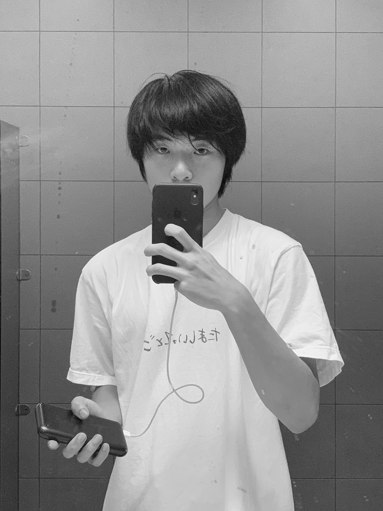
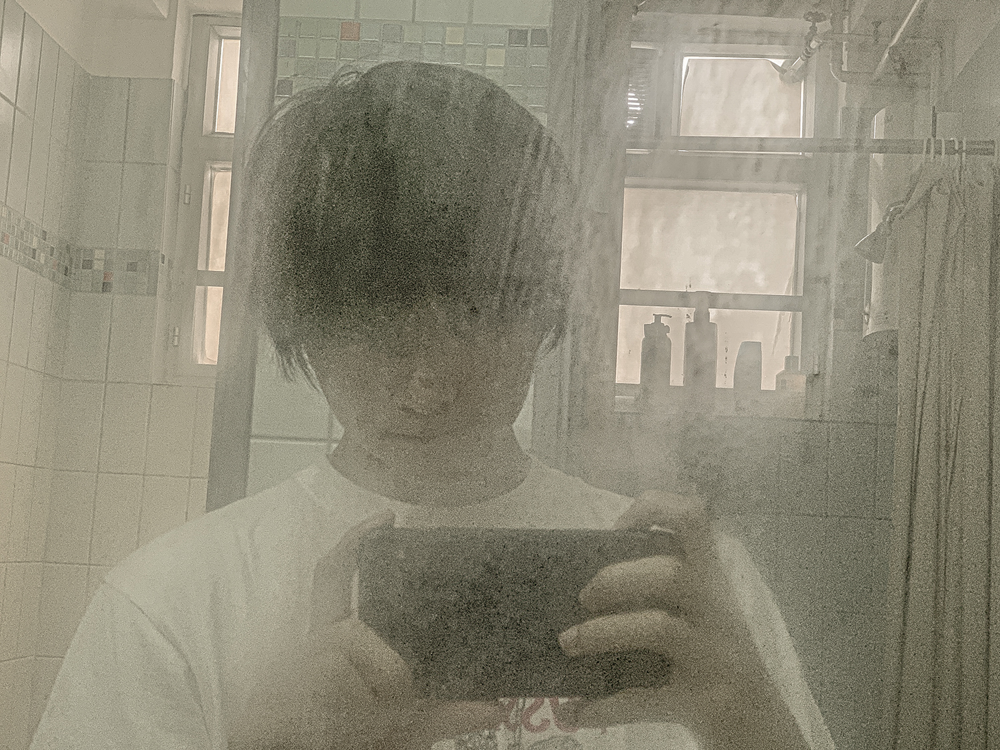
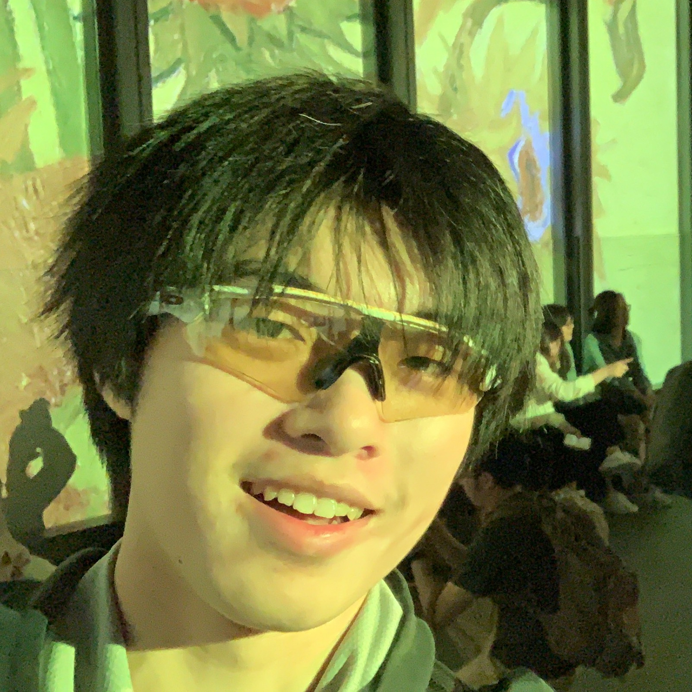
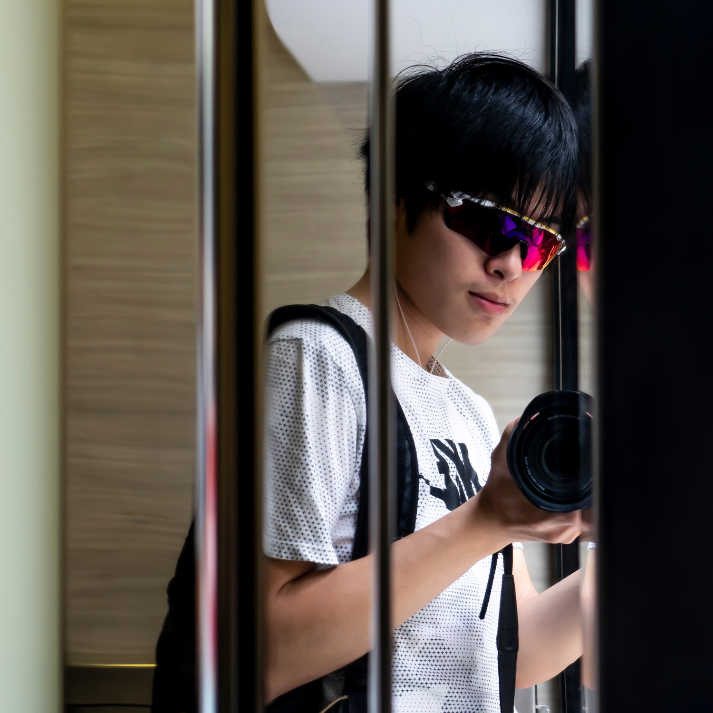

Chenyue "xdd44" DAI
Who am I? I don't know. I always struggle when I was asked to introduce myself. I always wonder whether the face in the mirror is truly my face. I feel I'm always changing.

This was taken between multiple mirror walls where I found I can see both front and beside of myself at the same time to observe what do I look like when taking photos.
30 June 2020
The Center, Central

This was the first time I used a tripod and remote control to take a photo of myself. I think it's closer to what I look like in others' eyes and cameras. (To those who come from future: we are in an epidemic now and are required to wear a mask at all public area.)
30 June 2020
Western District Public Cargo Working Area, Kennedy Town

I tend to keep a long hair maybe because I'm too lazy to go for a haircut. In this photo I was interested when I saw my wet hair.
18 May 2020
Student residence

The mirrors in the elevator creates multiple reflection that I found I can take a interesting photo.
4 May 2020
Academic building

I completely don't know why I took this photo but after all it looks not bad.
18 September
Academic building

This was taken when I started my Year 2 study but felt a bit confused about things happening around me. (Don't remember what those things are)
4 May 2020
Student residence

It's nice that I can find a happy face for this collection because normally I don't take selfies when I'm playing with my friends. So this is worth to be recorded.
13 April 2019
Van Gogh Exhibition

This was also taken when I liked to wear goggles. Trying to hide something of myself for no reason.
29 March 2019
Johnson Road, Wan Chai
This was actually the photo that made me interested in taking selfies through mirrors. There was a nice sunset beside me and I decided to take a selfie.
29 March 2018
China Ferry Terminal, Tsim Sha Tsui